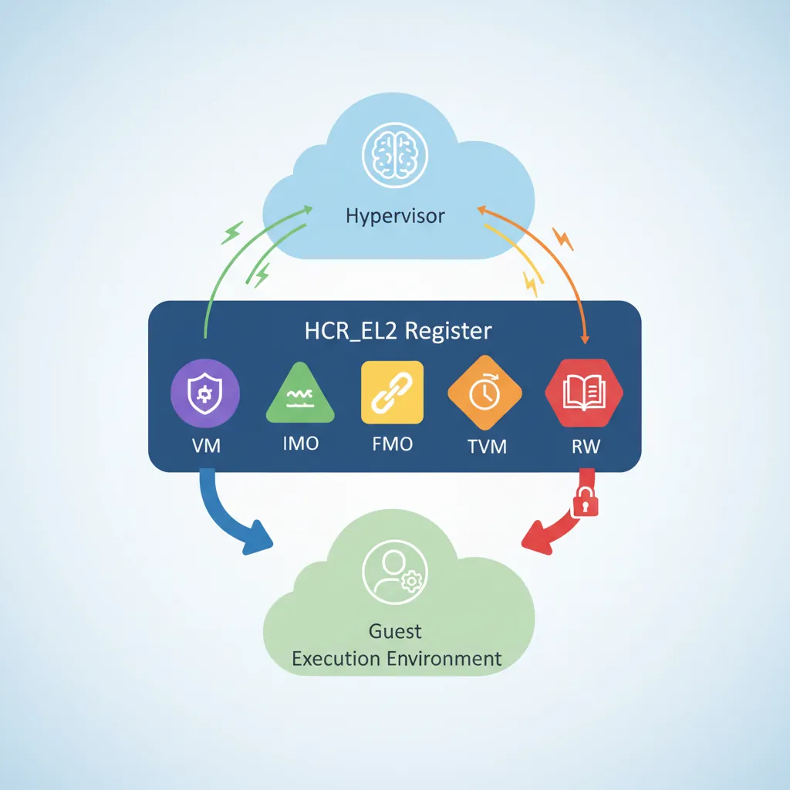
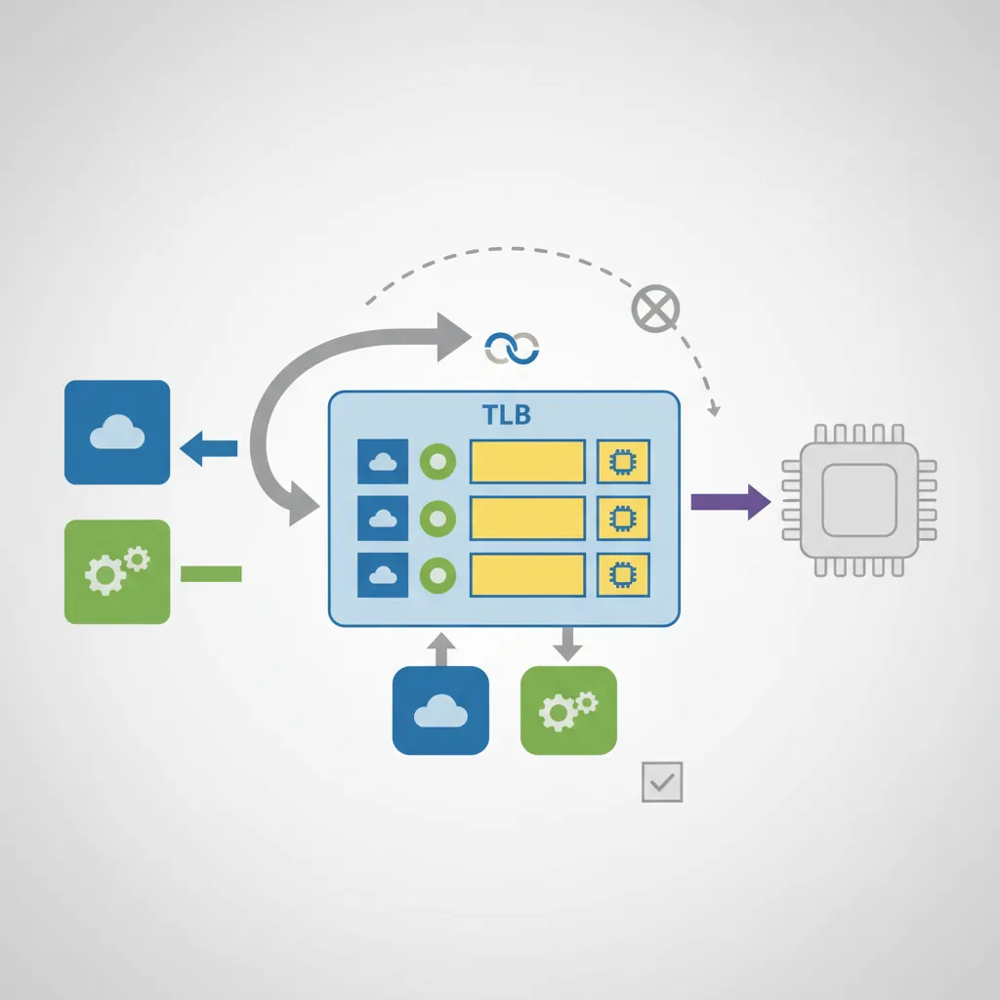
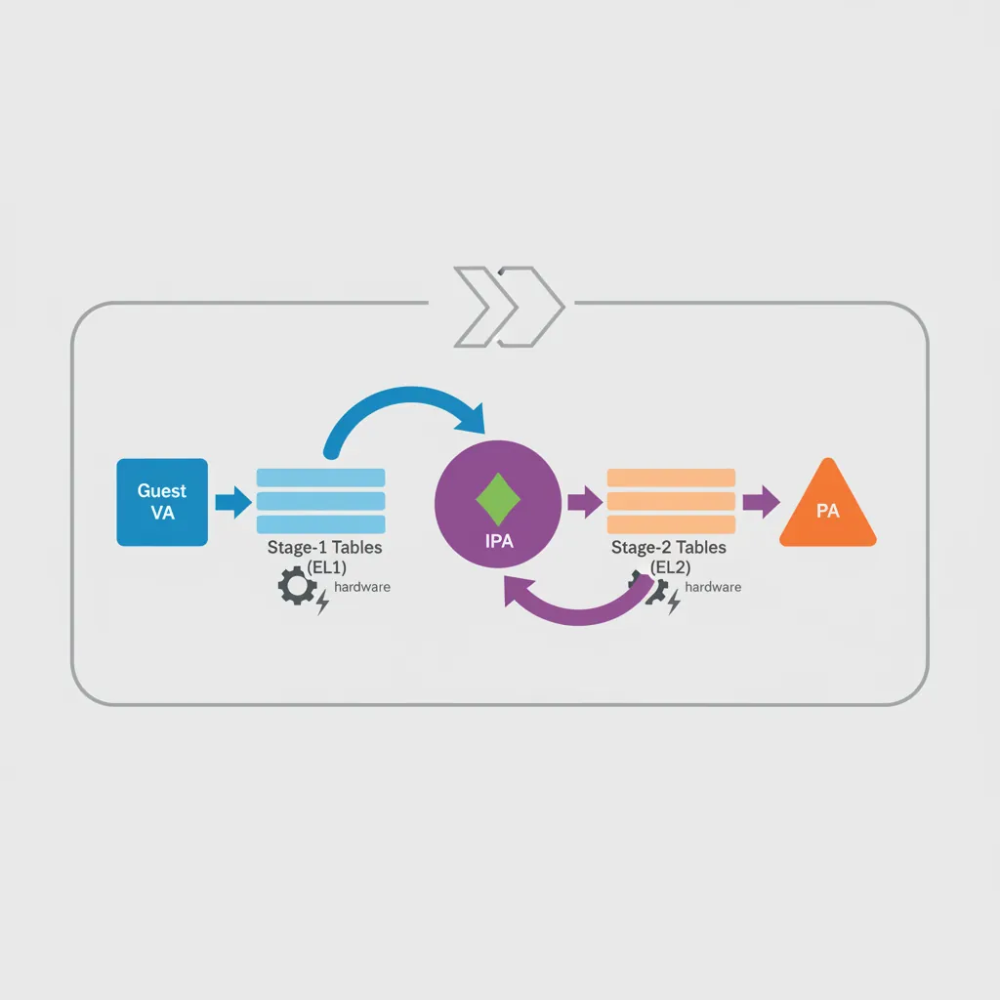
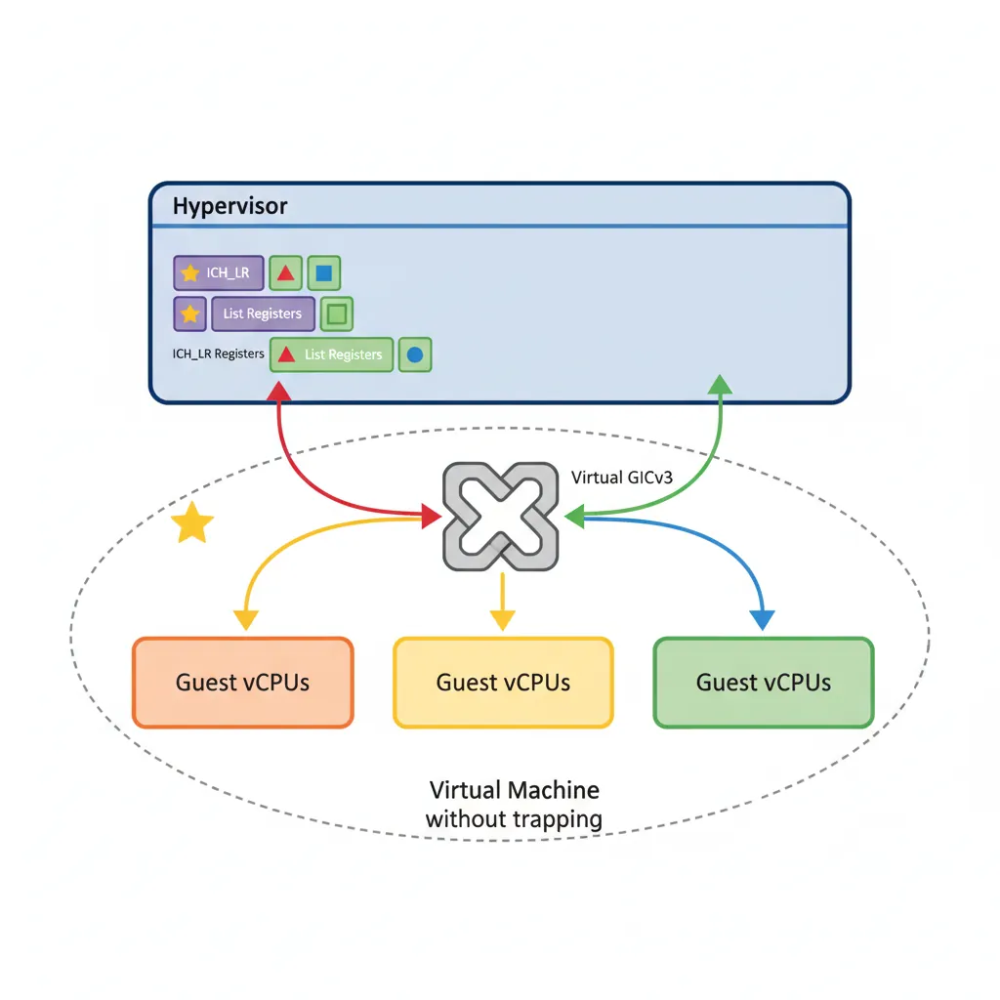
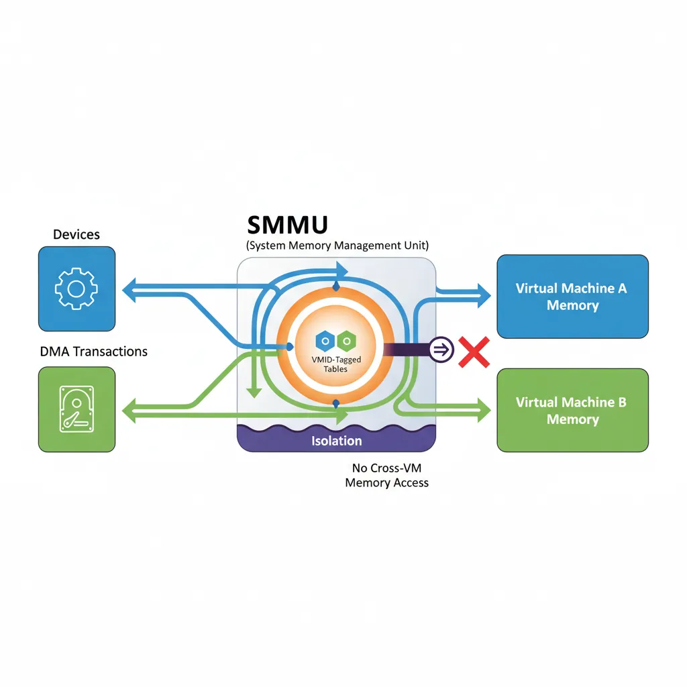

Virtualization Architecture Overview
ARM Assembly Mastery
Architecture History & Core Concepts
ARMv1→v9, RISC philosophy, profilesARM32 Instruction Set Fundamentals
ARM vs Thumb, registers, CPSR, barrel shifterAArch64 Registers, Addressing & Data Movement
X/W regs, addressing modes, load/store pairsArithmetic, Logic & Bit Manipulation
ADD/SUB, bitfield extract/insert, CLZBranching, Loops & Conditional Execution
Branch types, link register, jump tablesStack, Subroutines & AAPCS
Calling conventions, prologue/epilogueMemory Model, Caches & Barriers
Weak ordering, DMB/DSB/ISB, TLBNEON & Advanced SIMD
Vector ops, intrinsics, media processingSVE & SVE2 Scalable Vector Extensions
Predicate regs, gather/scatter, HPC/MLFloating-Point & VFP Instructions
IEEE-754, scalar FP, rounding modesException Levels, Interrupts & Vector Tables
EL0–EL3, GIC, fault debuggingMMU, Page Tables & Virtual Memory
Stage-1 translation, permissions, huge pagesTrustZone & ARM Security Extensions
Secure monitor, world switching, TF-ACortex-M Assembly & Bare-Metal Embedded
NVIC, SysTick, linker scripts, low-powerCortex-A System Programming & Boot
EL3→EL1 transitions, MMU setup, PSCIApple Silicon & macOS ABI
ARM64e PAC, Mach-O, dyld, perf countersInline Assembly, GCC/Clang & C Interop
Constraints, clobbers, compiler interactionPerformance Profiling & Micro-Optimization
Pipeline hazards, PMU, benchmarkingReverse Engineering & ARM Binary Analysis
ELF, disassembly, CFR, iOS/Android quirksBuilding a Bare-Metal OS Kernel
Bootloader, UART, scheduler, context switchARM Microarchitecture Deep Dive
OOO pipelines, reorder buffers, branch predictVirtualization Extensions
EL2 hypervisor, stage-2 translation, KVMDebugging & Tooling Ecosystem
GDB, OpenOCD/JTAG, ETM/ITM, QEMULinkers, Loaders & Binary Format Internals
ELF deep dive, relocations, PIC, crt0Cross-Compilation & Build Systems
GCC/Clang toolchains, CMake, firmware genARM in Real Systems
Android, FreeRTOS/Zephyr, U-Boot, TF-ASecurity Research & Exploitation
ASLR, PAC attacks, ROP/JOP, kernel exploitEmerging ARMv9 & Future Directions
MTE, SME, confidential compute, AI accelEL0 — Guest user space
EL1 — Guest OS kernel (Linux, etc.)
EL2 — Hypervisor (KVM, Xen, QEMU/TCG)
EL3 — Secure monitor (Trusted Firmware-A)
Stage-1 translation (guest VA→IPA) happens at EL1. Stage-2 (IPA→PA) is controlled by EL2.
EL2 Entry & HCR_EL2 Controls
// Entering EL2 from EL3 (Trusted Firmware drops into hypervisor)
// SCR_EL3: HCE=1 (HVC enabled), NS=1 (non-secure), RW=1 (EL2 is AArch64)
// Set EL3 target to EL2h (use SP_EL2) with all exceptions masked initially
// After EL3 → EL2 ERET, first thing hypervisor does:
// Configure HCR_EL2 (Hypervisor Configuration Register EL2)
.macro set_hcr_el2
mov x0, xzr
// VM=1: Enable stage-2 address translation (turns on two-stage MMU for guests)
orr x0, x0, #(1 << 0)
// SWIO=1: Set/Way operations trap to hypervisor (needed for flushing guest caches)
orr x0, x0, #(1 << 1)
// PTW=1: Protected table walk (stage-1 table walks go through stage-2)
orr x0, x0, #(1 << 4)
// AMO=1: Route physical SError to EL2
orr x0, x0, #(1 << 5)
// IMO=1: Route physical IRQ to EL2 (hypervisor handles physical interrupts)
orr x0, x0, #(1 << 6)
// FMO=1: Route physical FIQ to EL2
orr x0, x0, #(1 << 7)
// TWE=1, TWI=1: Trap WFE/WFI instructions from guests (power management)
orr x0, x0, #(1 << 13) | (1 << 14)
// TVM=1: Trap writes to EL1 MMU registers (detect guest paging changes)
orr x0, x0, #(1 << 26)
// RW=1: EL1 is AArch64 (not AArch32)
orr x0, x0, #(1 << 31)
msr hcr_el2, x0
isb
.endm
VMID, ASID & TLB Tagging
ASID (16-bit, TTBR0_EL1[63:48]): Tags EL0/EL1 translations per process. The kernel can switch TTBR0 without flushing TLBs from other processes.
VMID (16-bit, VTTBR_EL2[55:48]): Tags stage-2 translations per VM. Switching VMs (VTTBR_EL2) does not flush translations from the previous VM if VMIDs differ.
Combined tag: {VMID, ASID} = effectively 32-bit, enough for 65K VMs each with 65K processes.

// Putting VMID 7 + stage-2 page table root at physical address 0x50000000
// into VTTBR_EL2 (Virtualization Translation Table Base Register, EL2)
// VTTBR_EL2[63:48] = VMID (if VTCR_EL2.VS=1, else 8-bit in [55:48])
// VTTBR_EL2[47:1] = BADDR (base address >> 1 bit if 4KB granule, T0SZ=32)
mov x0, #0x50000000 // Stage-2 L1 table at 0x50000000
movk x0, #7, lsl #48 // Install VMID=7 in bits [55:48]
msr vttbr_el2, x0
isb
// VTCR_EL2 controls stage-2 table size and cacheability
// SL0=1 (start at L1), T0SZ=32 (IPA space = 2^(64-32)=4GB)
// ORGN0=01 (write-back cached outer) IRGN0=01 (write-back inner)
// SH0=11 (inner-shareable)
ldr x1, =0x80023540 // Representative VTCR_EL2 value
msr vtcr_el2, x1
isbStage-2 Page Table Walks
When HCR_EL2.VM=1, every memory access from EL0/EL1 goes through two translations. First the guest MMU resolves VA→IPA (Intermediate Physical Address) using the guest's TTBR0/TTBR1. Then the hardware page table walker performs a second walk (IPA→PA) using the hypervisor's stage-2 tables rooted at VTTBR_EL2. Both walks are performed entirely by hardware — no software emulation needed.

// Stage-2 page table descriptor format (identical to stage-1 but:
// - bits [9:8] = S2AP (Stage-2 Access Permissions, not AP)
// - bit 10 = S2AP[1], bit 9 = S2AP[0]
// - S2AP: 00=NoAccess, 01=R/O, 10=W/O, 11=R/W
// - MemAttr[3:0] replaces AttrIndx, maps to MAIR-like encoding in VTCR_EL2 field)
// Populate one 2 MB block in stage-2 L1 table (IPA 0x0 → PA 0x80000000)
// Block entry: PA | attrs | valid
// [51:30] = output address (2 MB aligned → bits 51:21 matter, mask the rest)
// [10:9] = S2AP = 11 (read/write)
// [5:2] = MemAttr = 0b1111 (Normal Writeback)
// [1:0] = 01 (block entry, not table)
ldr x0, =stage2_l1_table // Address of stage-2 L1 table
mov x1, #0x80000000 // PA 0x80000000 = output address for IPA 0x0
movk x1, #0x0753, lsl #0 // Encode: attrs bits [11:0]
// [11:10]S2AP=11, [9:8]=00 ignore,[5:2]MemAttr=1111, [1:0]=01 (block)
// Simplified encoding: 0b0000_0000_0111_0101_0011 = 0x753 | PA
orr x1, x1, #0x753
str x1, [x0] // Store into L1 table[0] = IPA 0x0 mappingVM Entry / Exit Assembly
// hyp_vector.S — minimal EL2 vector table (VBAR_EL2)
// Same layout as EL1 VBAR: 4 groups × 4 entries × 128 bytes
.balign 2048
.global hyp_vectors
hyp_vectors:
// EL2 with SP_EL0:
.balign 128; b hyp_sync_sp0
.balign 128; b hyp_irq_sp0
.balign 128; b hyp_fiq_sp0
.balign 128; b hyp_serr_sp0
// EL2 with SP_EL2 (normal hypervisor execution):
.balign 128; b hyp_sync_spx // Sync from hypervisor itself
.balign 128; b hyp_irq_spx // Physical IRQ routed to EL2
.balign 128; b hyp_fiq_spx
.balign 128; b hyp_serr_spx
// From EL1 (guest trap):
.balign 128; b guest_sync // HVC, data abort, SVC escalated
.balign 128; b guest_irq // Physical IRQ while in guest
.balign 128; b hyp_fiq_sp0
.balign 128; b hyp_serr_sp0
// From EL0 32-bit:
.balign 128; b unhandled
.balign 128; b unhandled
.balign 128; b unhandled
.balign 128; b unhandled
// guest_sync: decode ESR_EL2 EC field to dispatch trap handler
guest_sync:
stp x0, x1, [sp, #-16]!
mrs x0, esr_el2
ubfx x1, x0, #26, #6 // EC = ESR_EL2[31:26]
// Common EC values:
// 0x12 = HVC from AArch32, 0x16 = HVC from AArch64
// 0x20 = I-abort from lower EL, 0x24 = D-abort from lower EL
// 0x17 = SMC from AArch64 (trap SMC calls from guest)
cmp x1, #0x16
b.eq handle_hvc_el1
cmp x1, #0x24
b.eq handle_data_abort
b unhandled_trap// vm_enter.S — ERET from hypervisor into guest (VM entry)
// Before ERET: set SPSR_EL2 and ELR_EL2 to guest's saved state
vm_enter:
// Restore guest general-purpose registers from vcpu struct
ldp x0, x1, [x20, #VCPU_REGS + 0]
ldp x2, x3, [x20, #VCPU_REGS + 16]
// ... restore x4–x29 ...
ldr x30, [x20, #VCPU_REGS + 240]
// Switch stage-2 table to this guest's VMID
ldr x22, [x20, #VCPU_VTTBR]
msr vttbr_el2, x22
isb
// Load guest SPSR and ELR (restore guest exception state)
ldr x21, [x20, #VCPU_ELR_EL1]
msr elr_el2, x21
ldr x22, [x20, #VCPU_SPSR_EL1]
msr spsr_el2, x22
// Re-enable IRQ/FIQ delivery in SPSR_EL2.DAIF before ERET
eret // Jump to ELR_EL2, restore SPSR_EL2 → PSTATEVirtual GICv3
ARM GICv3 includes a virtualisation layer. EL2 programs List Registers (ICH_LR<n>_EL2) to inject virtual interrupts into the currently running vCPU. When the guest reads the GIC CPU interface registers, the hardware returns the values from the List Registers rather than the physical registers — no emulation trap needed for most interrupt operations.

// Inject virtual IRQ #32 (guest SGI 0) into vCPU currently on this physical CPU
// ICH_LR0_EL2 layout:
// [63] = State=01 (Pending=0b01)
// [60] = HW=0 (no linked physical IRQ) or 1 (Yes → deactivate physical automatically)
// [55:48] = pINTID (physical INTID if HW=1)
// [41:32] = vINTID (virtual interrupt ID → guest sees this)
// [23:16] = Priority (0 = highest)
.equ ICH_LR_STATE_PENDING, (1ULL << 62) // Use 62 for pending state bit
.equ ICH_LR_EOI, (1ULL << 41) // EOI flag
mov x0, #32 // vINTID = 32
lsl x0, x0, #32 // Shift to ICH_LR[41:32]
orr x0, x0, #(1 << 62) // State = Pending
orr x0, x0, #(1 << 56) // HW = 1 (link to physical INTID)
mov x1, #32
lsl x1, x1, #48
orr x0, x0, x1 // pINTID = 32 in [55:48]
msr ich_lr0_el2, x0 // Install in List Register 0
// How many list registers does this GIC implementation provide?
mrs x2, ich_vtr_el2
and x2, x2, #0x1F // ICH_VTR_EL2[4:0] = ListRegs - 1
add x2, x2, #1 // Actual countKVM on ARM64
// KVM ARM64 vcpu struct (simplified, see arch/arm64/include/asm/kvm_host.h)
struct kvm_vcpu_arch {
struct kvm_cpu_context ctxt; // GP regs, PC, PSTATE saved at trap
u64 hcr_el2; // Per-vcpu HCR_EL2 (e.g. TVM=1 or 0)
u64 vttbr; // Stage-2 table + VMID for this vcpu
struct vgic_v3_cpu_if vgic_cpu; // ICH_LR[0..15]_EL2 shadow copies
u64 sys_regs[NR_SYS_REGS]; // EL1 system register bank saved on exit
};
// Key path: ioctl(KVM_RUN) → kvm_arch_vcpu_ioctl_run() →
// kvm_call_hyp(__kvm_vcpu_run, vcpu) →
// __kvm_vcpu_run at EL2 → vm_enter → ERET into guest# Verify KVM/ARM64 is available and usable
ls -la /dev/kvm
dmesg | grep -i "kvm"
# kvm [1]: IPA Size Limit: 44 bits
# kvm [1]: GICv3 initialized in virtual mode
# Run a mini VM with QEMU/KVM on an ARM64 host (Ampere Altra, Graviton3, etc.)
qemu-system-aarch64 \
-machine virt,gic-version=3 \
-enable-kvm \
-cpu host \
-m 512M \
-kernel Image \
-append "console=ttyAMA0 root=/dev/vda" \
-drive if=virtio,file=rootfs.qcow2 \
-serial stdio \
-display noneSMMU Stage-2 for DMA Isolation
Without an IOMMU/SMMU, a guest could program a DMA-capable PCIe device to read/write any physical address — bypassing all CPU-side page table protections. The ARM System Memory Management Unit (SMMU v3) applies stage-2 translation to DMA transactions from devices, using the same VMID/stage-2 tables as the CPU. A guest can only DMA to IPA ranges that the hypervisor maps in the stage-2 table.

# Check SMMU presence on an ARM server
dmesg | grep -i smmu
# arm-smmu-v3 9050000.smmu: probed -- stalls, S2 supported
# iommu: Adding device to domain group 0
# In Linux kernel config, enable SMMU stage-2 for KVM (VFIO passthrough):
# CONFIG_ARM_SMMU_V3=y
# CONFIG_IOMMU_DEFAULT_PASSTHROUGH=n ← devices get IOMMU domain by default
# CONFIG_VFIO=y
# CONFIG_VFIO_IOMMU_TYPE1=y
# Bind NVMe to VFIO for passthrough to KVM guest:
echo "144d a80a" > /sys/bus/pci/drivers/vfio-pci/new_id
echo "0000:01:00.0" > /sys/bus/pci/devices/0000:01:00.0/driver/unbind
echo "0000:01:00.0" > /sys/bus/pci/drivers/vfio-pci/bind
# SMMU stage-2 now enforces that this NVMe can only DMA to guest's IPA rangesCase Study: AWS Graviton & KVM on ARM64
How AWS Built a Cloud on ARM Virtualization
AWS Graviton is the most commercially significant deployment of ARM virtualization. Here's how their journey maps to the concepts in this article:
- Graviton1 (2018, Cortex-A72 based): Used KVM with VHE (Virtualization Host Extensions, ARMv8.1) — the Linux kernel itself runs at EL2 instead of EL1, eliminating the EL1↔EL2 world-switch overhead. This reduced VM entry/exit latency from ~1.5μs to ~800ns by avoiding full register save/restore on every trap.
- Graviton2 (2020, Neoverse N1): Leveraged 16-bit VMIDs (65,536 VMs without TLB flushes) and GICv3 virtual list registers for near-zero-cost interrupt injection. AWS reported EC2 instances achieving 99.8% of bare-metal performance on compute-bound workloads — the stage-2 translation adds only 2-5% overhead (extra TLB miss cost).
- Graviton3 (2022, Neoverse V1): Added Realm Management Extension (RME) prototype support for confidential VMs. The stage-2 tables now enforce that even the hypervisor cannot read guest memory — a fundamental shift from "hypervisor protects guests from each other" to "hardware protects guests from the hypervisor."
- Graviton4 (2024, Neoverse V2): 96 cores, each running KVM with nested virtualization support (EL2 can trap into a higher EL2 via emulation). Customers run containers inside VMs inside the Nitro hypervisor — three layers of isolation, all hardware-accelerated.
Key lesson: Every register and mechanism in this article (HCR_EL2, VTTBR_EL2, ICH_LR, SMMU) is running in production on millions of AWS instances right now. This isn't theoretical — it's the foundation of a $80B+ cloud business.
The Road to Hardware Virtualization on ARM
ARM took a very different path to virtualization than x86:
- 2008 — ARMv7 Virtualization Extensions: ARM added EL2 (Hyp mode) to Cortex-A15. Unlike x86's VMX (added in 2005 to Pentium 4), ARM's design was clean from the start — no need for binary translation or shadow page tables because the two-stage MMU was designed in from day one.
- 2011 — KVM/ARM: Columbia University researchers (Christoffer Dall, Jason Nieh) ported KVM to ARM, proving that ARM's virtualization extensions could match x86 KVM performance. Their ASPLOS 2014 paper showed <1% overhead on compute workloads.
- 2016 — VHE (ARMv8.1): Virtualization Host Extensions allowed the host kernel to run at EL2 natively, eliminating the "trampoline" bounce between EL1 and EL2 that early KVM/ARM required. This halved world-switch cost.
- 2021 — pKVM (Protected KVM): Google's Android Virtualization Framework uses a minimal EL2 hypervisor that deprivileges the Linux kernel — the kernel runs at EL1 and cannot access guest memory. This inverts the traditional trust model.
Hands-On Exercises
Inspect KVM/ARM64 on a Real System
If you have access to an ARM64 Linux machine (Raspberry Pi 4, cloud ARM instance, or Apple Silicon with Linux VM):
- Check KVM availability:
ls -la /dev/kvmanddmesg | grep -i kvm - Read the IPA size:
dmesg | grep "IPA Size"— this tells you the maximum guest physical address space (typically 40 or 44 bits) - Check which GIC version KVM is using:
dmesg | grep "GICv" - If QEMU is installed, launch a minimal guest:
qemu-system-aarch64 -machine virt,gic-version=3 -enable-kvm -cpu host -m 256M -nographic -kernel /boot/vmlinuz-$(uname -r)
Observe: Compare boot time with -enable-kvm vs without it (TCG emulation). KVM should be 10-50x faster.
Measure VM Exit Cost
Quantify the overhead of trapping from guest to hypervisor:
- Inside a KVM guest, write a tight loop that executes
HVC #0(hypercall) 1 million times, reading the cycle counter before and after - Each HVC causes: guest context save → EL2 trap handler → ESR_EL2 decode → handle → guest context restore → ERET. Divide total cycles by 1M to get per-exit cost
- Compare against a loop doing 1 million
NOPinstructions to measure the baseline - Calculate: VM exit overhead = (HVC cycles - NOP cycles) / 1M iterations
Expected: ~200-800 cycles per VM exit on Neoverse N1 (depending on HCR_EL2 trap configuration and how much state KVM saves).
Build a Minimal EL2 Hypervisor in QEMU
Extend the Part 20 bare-metal kernel to run a guest at EL1:
- Boot at EL2 in QEMU (
-machine virt,virtualization=on). Configure HCR_EL2 with VM=1, IMO=1, RW=1 - Set up a minimal stage-2 identity map: IPA 0x40000000 → PA 0x40000000 (RAM), IPA 0x09000000 → PA 0x09000000 (UART). Use 1GB block entries at L1 for simplicity
- Write VTTBR_EL2 with VMID=1 and your stage-2 table base. Configure VTCR_EL2 for 4KB granule, 40-bit IPA space
- Load a tiny EL1 payload (just prints "Hello from EL1!" via UART), set ELR_EL2 to the payload entry point, set SPSR_EL2 to EL1h, and ERET
- Verify the guest prints to UART through the stage-2 mapping
Challenge: After the guest prints, have it execute HVC #42. Catch the trap in your EL2 vector, decode ESR_EL2 to confirm EC=0x16 and ISS=42, print "Hypercall received!" from EL2, and ERET back to the guest.
Conclusion & Next Steps
ARM virtualization is a direct extension of the privilege architecture: EL2 sits above EL1 exactly the way EL3 sits above EL2, and stage-2 tables compose cleanly with stage-1 in hardware. KVM exploits this to provide nearly bare-metal performance for guests — a VMEXIT (trap to hypervisor) costs ~800 ns on a modern Neoverse core, versus the many microseconds on early emulation-based systems. The AWS Graviton case study shows this technology powering millions of cloud instances, and the exercises guide you from inspecting KVM on real hardware to building your own minimal hypervisor.